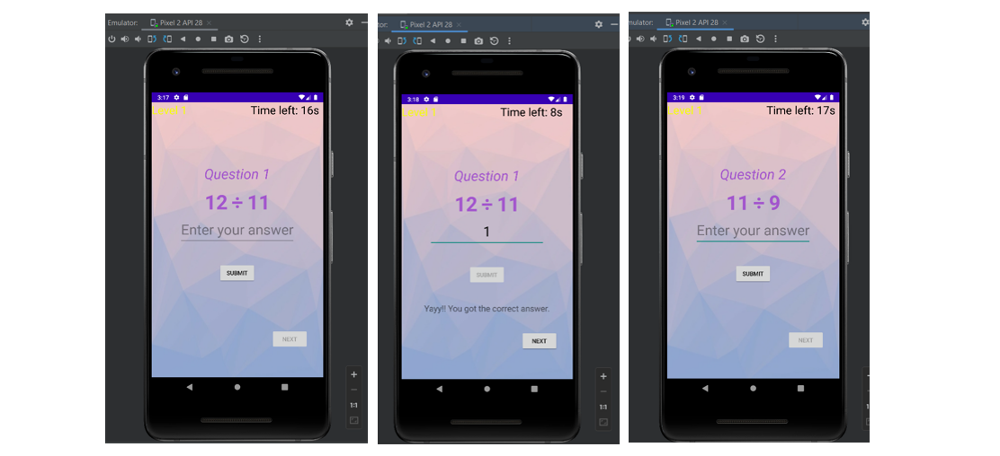

In the level 0, there will be 10 random math questions. User can type the answer and when they click the SUBMIT button, the program checks answer and displays if the answer is correct or not. Then, when the user click NEXT button, it will go to next question.
In the level 1, there will be 10 random math questions with 20 seconds time limitation for each question. User can type the answer and when they click the SUBMIT button, the program checks answer and displays if the answer is correct or not. Then, when the user clicks NEXT button, it will go to next question. When the SUBMIT button is clicked, the countdown timer will be stopped.
If user cannot answer until the 20 seconds countdown is finished, that question cannot be answered that SUBMIT button will be disabled and a message to go to next question is shown.
In the level 2, there will be 10 random math questions with 10 seconds time limitation for each question. User can type the answer and when they click the SUBMIT button, the program checks answer and displays if the answer is correct or not. Then, when the user clicks NEXT button, it will go to next question. When the SUBMIT button is clicked, the countdown timer will be stopped.
If user cannot answer until the 10 seconds countdown is finished, that question cannot be answered that SUBMIT button will be disabled and a message to go to next question is shown.